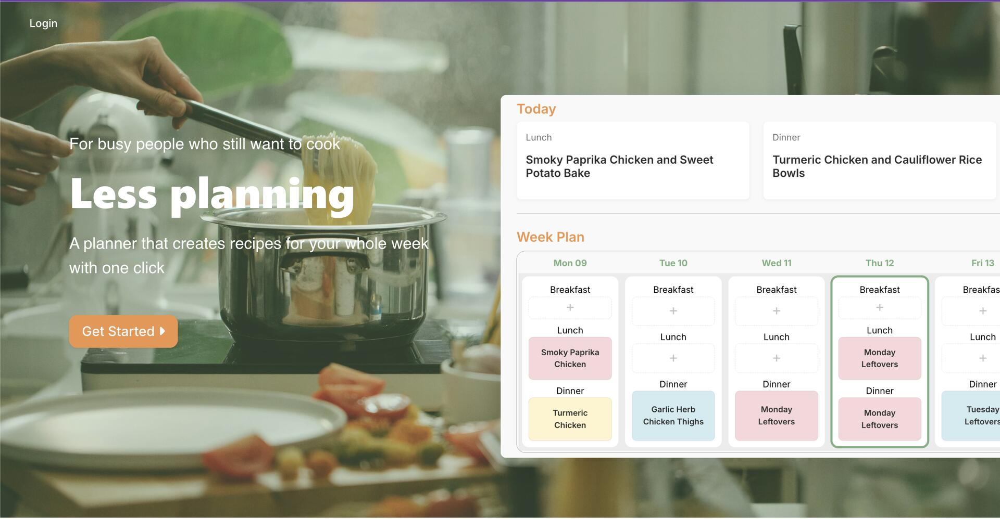
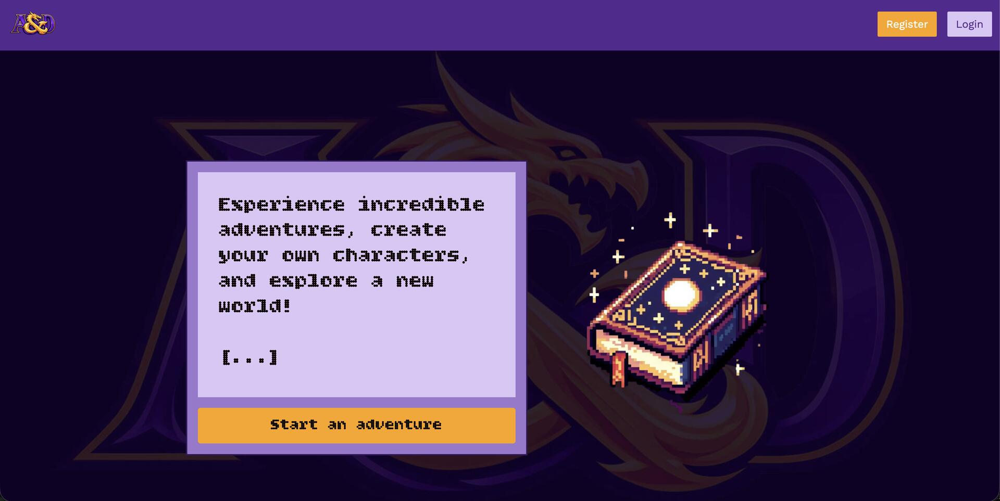

Team projects
Forkcast
Forkcast is a meal planning web app designed to make weekly cooking simple and stress-free. Users save their ingredient preferences and dietary restrictions, create weekly meals based on portions, and generate shopping lists automatically. Whether you're cooking for one or feeding a family, Forkcast helps you spend less time deciding what to eat and more time enjoying it.
Built with Ruby on Rails using Hotwire, AJAX, SweetAlert modals, and Sortable. It's a fast, modern, and easy-to-use tool for everyday meal prep.

Forkcast
Forkcast is a meal planning web app designed to make weekly cooking simple and stress-free. Users save their ingredient preferences and dietary restrictions, create weekly meals based on portions, and generate shopping lists automatically. Whether you're cooking for one or feeding a family, Forkcast helps you spend less time deciding what to eat and more time enjoying it.
Built with Ruby on Rails using Hotwire, AJAX, SweetAlert modals, and Sortable. It's a fast, modern, and easy-to-use tool for everyday meal prep.


A&D
A fun, decision-based role-playing game where you can create your own character and story or let the AI take you on an unpredictable journey. Every choice matters, and the narrative adapts to you in real time.
Built with Stimulus JS for reactive front-end interactions, PostgreSQL for reliable data storage, Bootstrap for clean and responsive styling, and Figma for prototyping the user experience. Deployed on Heroku for seamless access anytime, anywhere.